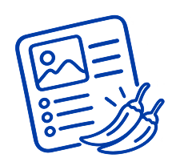

MAMA'S CATEGORIES.
From quick lunches to delicious dinners, sweet treats and refreshing drinks. Explore Mama’s recipe universe, find your next favourite and get all the ingredients by one click. Pick up yourself or get delivered straight to your door.
